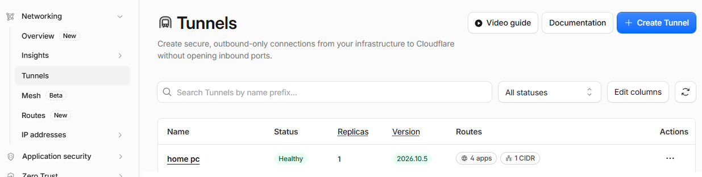
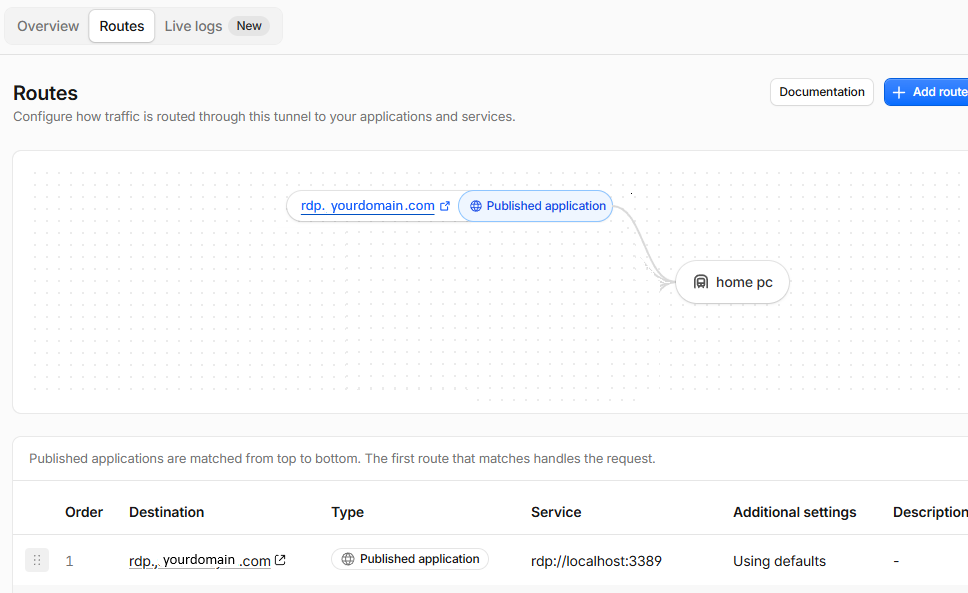
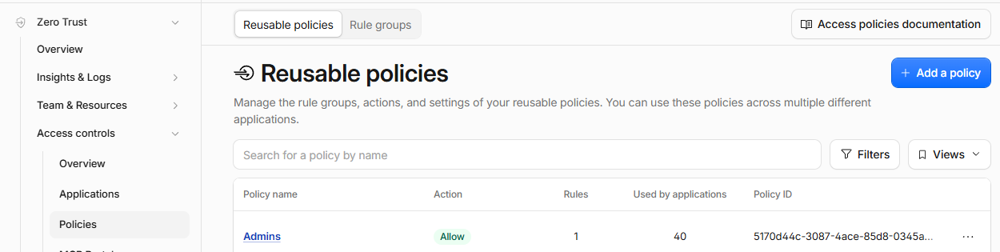
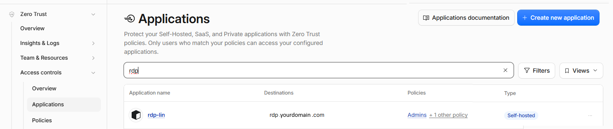

Advanced topics
Cloudflare proxying, the Mac SSH workaround, and reaching the headset's ADB over Cloudflare. Everything here works the same way for RDP, SSH, and VNC — the screenshots below show RDP as the example, but the pattern is the same for all connection types.
Cloudflare proxy, in plain terms
Normally, connecting to a computer from outside its network means opening an inbound port on that network. Cloudflare turns that around: the computer at home runs a small tunnel program that connects out to Cloudflare, and Cloudflare routes a public hostname to it. Nothing listens on an inbound port at home.
In Farside, you pick Cloudflare as the connection's Network, instead of Direct. On the headset, Farside runs its own bundled Cloudflare client for that session, talks to Cloudflare, and connects to your computer through the tunnel on a private loopback connection. If the hostname is protected by Cloudflare Access, a browser sign-in opens when needed. Your computer's own host and certificate checks still apply — the tunnel does not skip them — and saved Cloudflare credentials are stored encrypted on the headset.
Use it when the computer you want is not on the same network as the headset, or when you do not want to open ports to reach it. SOCKS5 and HTTP proxies are also available per connection, for networks where those fit better.
Setting up Cloudflare names to use
The setup is done once in the Cloudflare dashboard, on the computer that will be reached, and then reused by every Farside connection that points at it.
1. Create a tunnel on the home computer
In Cloudflare Zero Trust, go to Networks > Tunnels and create a tunnel, then install and run the tunnel program on the computer you want to reach. Give the tunnel a name you will recognise, such as the computer's name. Before troubleshooting Farside, check here first: the tunnel should show as Healthy, with at least one replica running.

2. Route a hostname to the local service
In the tunnel, add a route: a public hostname, and the service on that computer it should reach. For RDP, that is the local Remote Desktop service, on port 3389. The same pattern applies to the others — SSH on port 22, and VNC / Mac Screen Sharing on port 5900 — just a different hostname and port for each service.

3. Protect the hostname with an Access policy
A public hostname on its own is reachable by anyone who knows it. In Zero Trust > Access, create a self-hosted application for that hostname and assign it a policy — for example, a policy that allows only a named group of users. Only users who match the policy can reach the application; everyone else is stopped by Cloudflare before they ever reach your computer. Reusable policies can be shared across many applications.


4. Point Farside at the hostname
In Farside, add or edit the connection and set its Network to Cloudflare. Enter the public hostname as the host, and the service port (3389 for RDP, 22 for SSH, 5900 for VNC / Mac). When you connect, sign in through the browser if Cloudflare Access asks you to, then sign in to the computer itself as usual.
The Mac workaround: connecting to a Mac through SSH
Mac Screen Sharing's direct video and audio use UDP, and Cloudflare, HTTP, and SOCKS routes do not carry that UDP traffic. A Mac reached only through one of those routes can therefore lose its direct video and audio, or fall back to ordinary VNC without them.
The workaround is to go through SSH instead, using two extra checkboxes in the Mac connection:
- First, set up SSH to that same Mac. Add an SSH connection that signs in to the Mac you want to view — via its Cloudflare route or another supported transport. It must sign in to the viewed Mac itself, not to a different machine.
- Then, in the Mac / VNC connection, open Review & options > Companion Remote Login. Pick that SSH connection as the “SSH connection for media relay”.
- Turn on “SSH media relay (experimental)”. This runs a small script on the Mac, over your SSH login, to relay video and audio. It lasts only for the session and installs nothing on the Mac. Farside will ask you to confirm it the first time, because it is experimental.
- Turn on “Use SSH for the full Mac connection”. Now the whole Mac connection — screen sharing, video, and audio — goes through that SSH connection, and only its Cloudflare route is needed. The saved VNC hostname is ignored while this is on, and the server port must be the Mac's Screen Sharing port, normally 5900. Turn it off to go back to separate VNC and SSH routes.
No manually configured SOCKS proxy is needed for this. Files and SFTP pairing are separate from the media relay — pairing a Mac with an SSH connection for files does not, on its own, turn on the media workaround.
Reverse tunnel: reaching the headset's ADB from elsewhere
This one runs in the opposite direction. The sections above let the headset reach computers at home. This lets a computer elsewhere reach the headset — specifically, its wireless ADB — so you can push builds and debug the headset from another machine, without opening an inbound port on the headset's network.
First, turn on wireless debugging on the headset — the tunnel section does not appear until you do. In About, the Wireless ADB Cloudflare Tunnel section only shows up once developer mode and wireless debugging are on and the headset has discovered its wireless ADB port. Until then there is nothing to set up here, and Start stays unavailable. If the tunnel later pauses, it will say so plainly: “Paused: enable developer mode and wireless debugging”.
Once wireless debugging is on, in About, set up the ADB tunnel: a Cloudflare tunnel token, the published hostname, and a bridge port (the relay defaults to 5555). Start the service from there. It runs as a foreground service, does not start automatically at boot, stops if you force-stop it or turn developer / wireless ADB off, and checks every 15 seconds that ADB is still available, pausing the tunnel if it is not. The token is stored encrypted on the headset, and the generated tunnel configuration contains no token.
In the Cloudflare dashboard, publish that hostname to the bridge port — a route to tcp://localhost:<bridge-port> — and create its DNS record, exactly as for a home computer above.
On the remote computer, run the Cloudflare client to open the tunnel locally, then connect ADB through it:
cloudflared access tcp --hostname <hostname> --url 127.0.0.1:<bridge-port>
adb connect 127.0.0.1:<bridge-port>That carries the headset's existing wireless ADB authentication through the relay. It does not publish a raw public TCP port, and it is developer access to the headset, not a Farside session — it is the route used to install and test builds on the headset from elsewhere.
That “elsewhere” does not have to be another computer in your home. It can also be a cloud-hosted build environment — for example, OpenAI Codex Cloud or GitHub Codespaces — running the build while the headset sits at home. The cloud environment runs the same two commands above, connects ADB through Cloudflare, and can install and test the build on the real headset, just as a local machine would.